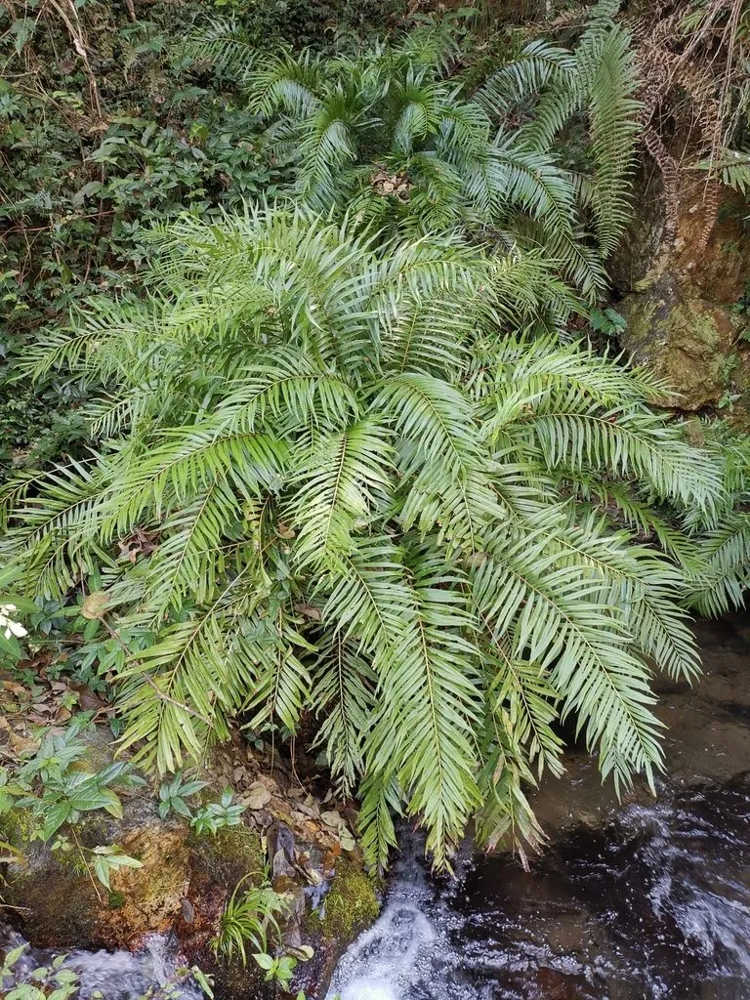

蕨类与裸子植物 · 植物界
华南紫萁 Osmunda vachellii

华南紫萁是南方常见的紫萁类蕨类，羽状叶丛生挺拔，孢子叶紧密收缩，嫩叶也可作山野菜食用和药用。
- 分类
- 门蕨类植物门纲水龙骨纲目紫萁目科紫萁科属紫萁属
- 栖息环境
- 南方山地林下、溪边与沟谷，喜温暖湿润半阴
- 地理分布
- 中国华南、西南及华东南部，越南、日本也有分布
- 保护级别
- 暂无评估；野生种群常见
物种志
华南紫萁是紫萁科多年生蕨类，株高 0.8–1.5 m。根状茎粗壮直立，叶二型：营养叶为二回羽状复叶，羽片宽大、排列整齐，叶面深绿色，幼叶拳卷；孢子叶较短，羽片强烈收缩，密生褐色孢子囊。
华南紫萁喜温暖湿润、半阴环境，多生于南方山地林下、溪边与沟谷，是华南、西南常见的蕨类。它以孢子繁殖，也可分株。嫩叶可作山野菜，根状茎含淀粉，在民间作药用，有清热解毒、止血之效。华南紫萁植株高大、叶姿优美，也适合林下和溪边栽培观赏。它与紫萁外形相似，但羽片更宽大、分布更偏南，是南方山野中辨识度较高的紫萁类植物，适合在林下和溪边栽培观赏。
形态与习性
- 株高0.8–1.5 m
- 叶二型，营养叶二回羽状
- 孢子叶羽片强烈收缩，密生孢子囊
- 食用嫩叶可作山野菜
- 生境南方林下与溪边
趣味知识
- 华南紫萁的羽片比紫萁更宽大，叶片挺拔舒展。
- 它的孢子叶羽片强烈收缩，密生褐色孢子囊。
- 华南紫萁喜温暖湿润，是南方山野常见的紫萁类植物。